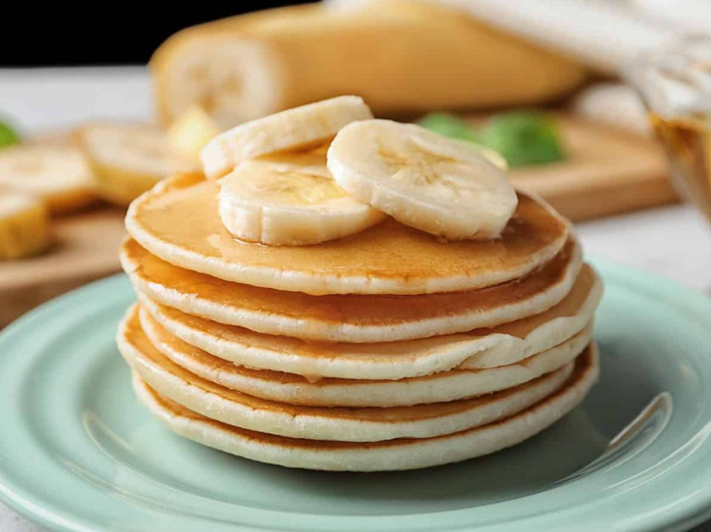

Panqueca de banana
- 2 Bananas.
- 2 ovos.
- 1 colher (sopa) de açucar.
- 5 colheres de (sopa) de farinha de trigo.
- 1/2 xícara (chá) de leite
Modo de Preparo
- Amasse as duas bananas com a ajuda de um garfo, junte os dois ovos, o açúcar e misture bem.
- Acrescente a farinha de trigo, uma colher de cada vez, misturando para não empelotar.
- Por último coloque o leite, mexendo até obter uma massa homogênea.
- Coloque uma concha da massa no centro de uma frigideira antiaderente, devagar para que a massa não se espalhe muito.
- Deixe dourar e com a ajuda de uma espátula vire e doure o outro lado.
- Prontinho :D
